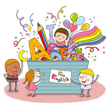
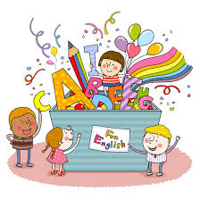
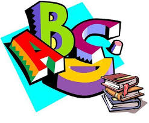

1. 동사 verbs
 영어는 시간에 대해 자세히 표현하는 언어이며, 말하는 사람이 정확히 표현해야 한다.
변하지 않는 사실이나 일반적 사실, 반복적으로 이루어지는 행동 등, 원래 그렇다고 할 수 있는 것들은 동사를 원래 모양 그대로 써서 사용한다.
문장변형
(평서문>부정문>의문문>의문사)
3초 테스트로 알아보기
 영어는 시간에 대해 자세히 표현하는 언어이며, 말하는 사람이 정확히 표현해야 한다.
변하지 않는 사실이나 일반적 사실, 반복적으로 이루어지는 행동 등, 원래 그렇다고 할 수 있는 것들은 동사를 원래 모양 그대로 써서 사용한다.
문장변형
(평서문>부정문>의문문>의문사)
(듣는 사람이 시간에 집중하게 됨) ▶ n || adj

▶ Voiced (성대가 울리는 소리) : / z /
예) study -> studies
▶ Unvoiced (성대가 울리지 않는 소리)
/ s /
예) like -> likes
▶ ~ch, ~sh, ~s + 'es'
/ iz /
예) watches, washes, dances